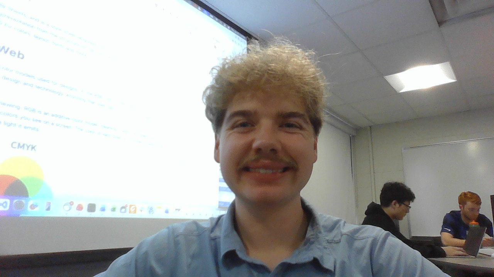
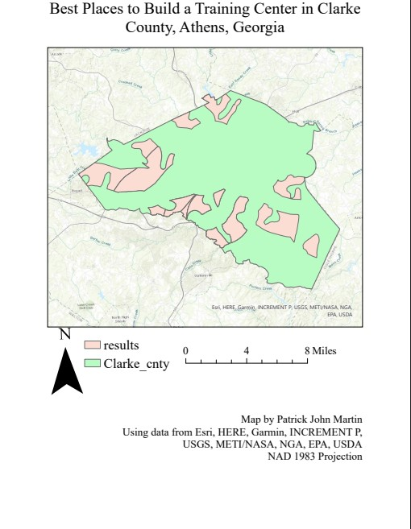
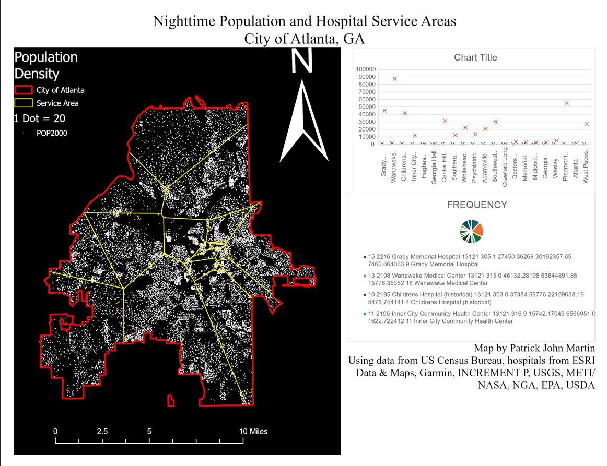
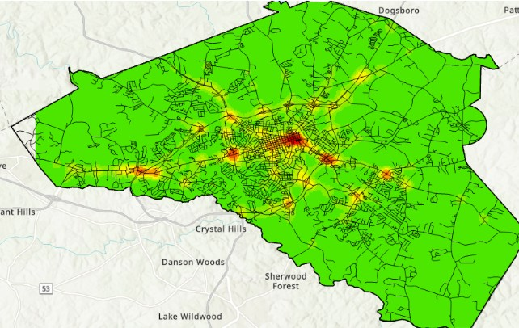

Patrick John Martin
Contact Patrick John Martin
Patrick John Martin

103 Rushin Drive, Athens, GA
GIS Professional with skills in Esri Products, Spatial Analysis, as well as proficient skills in Java, Python and soon web programming. Interested in all things GIS and Data Analytics.
Education
University of Georgia
3.45
Bachelor of Science
December 2026
University of North Georgia
4.0
Associate of Computer Science
August 2022 - May of 2024
Honors and Awards
Deans List
2024/2025
Hope and Zell Holder
2022-Current
Skills
HTML
Java
Esri Products (ArcGIS Pro, Storymaps, 123 Survey)
Python
Projects
Places to Build a Training Facility in Athens GA

Built in ArcGIS Pro
Utilizes various spatial analysis tools
Nighttime Population and Hospital Service Areas

Built in ArcGIS Pro
Utilizes various spatial analysis tools
Athens Clark County Crash/Hot Spot Map

Built in ArcGIS Pro
Utilizes spatial joins, buffers, and other spatial analysis tools